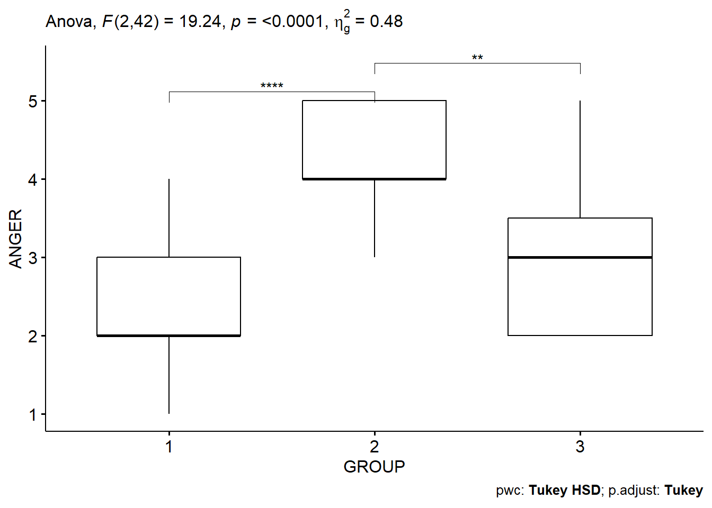

Chapter 10 ANOVA
This Chapter provides analysis and examples related to the first part of Lecture 11.
Here, I’ll demonstrate the basic application of ANOVA on the simple 3-group case of the Ed Sheeran Study, and go from there to introduce some classic ‘concerns’ with the statistical hypothesis testing methodology.
## ID GROUP ANGER
## Min. : 1 1:15 Min. :1.000
## 1st Qu.:12 2:15 1st Qu.:2.000
## Median :23 3:15 Median :3.000
## Mean :23 Mean :3.222
## 3rd Qu.:34 3rd Qu.:4.000
## Max. :45 Max. :5.000## # A tibble: 6 × 3
## ID GROUP ANGER
## <dbl> <fct> <dbl>
## 1 1 1 2
## 2 2 2 5
## 3 3 1 2
## 4 4 3 3
## 5 5 2 4
## 6 6 3 2Let’s create a quick table of the group means, and visualize it with a simple boxplot of the groups.
## # A tibble: 3 × 5
## GROUP variable n mean sd
## <fct> <fct> <dbl> <dbl> <dbl>
## 1 1 ANGER 15 2.33 0.816
## 2 2 ANGER 15 4.27 0.704
## 3 3 ANGER 15 3.07 1.03
Interesting picture. Group 1 is the control group, Group 2 is those who heard Ed Sheeran, Group 3 is those who heard other music. This is what we might call ‘model-free’ analysis. We are just looking at the data to see if intuitively it looks like we expect it to.
Let’s run an ANOVA now, which places a statistical model on it, and tests whether or not the data supports the model.
## ANOVA Table (type II tests)
##
## Effect DFn DFd F p p<.05 ges
## 1 GROUP 2 42 19.235 1.17e-06 * 0.478Results here suggest there is a significant effect (p-value is very small). We also have an effect size measure (‘ges’, or generalized eta-squared) which is very useful to us, and suggests the effect is quite large. This can be interpreted similarly to a regression coefficient (which is also an effect size measure), and is the amount of variance in the dependent variable (Anger) that is explained by group membership.
However, ANOVA only tests the general effect of the treatment / group. We don’t know whether this is because of the difference between all of the groups, or only some. E.g., is it that there is an effect of music in general (i.e. between Control and Ed, and Control and Music, but not between Ed and Music), or that Ed specifically is anger-inducing (in which case we would see an effect between Ed and Music, and Ed and Control, and not between Music and Control).
10.1 Post-Hoc Testing
We can investigate this using post-hoc tests, which compare the difference between each pair of groups. There are many different types of post-hoc test for ANOVA, but the most typical one to use is the Tukey’s test, which is what we will do here.
## # A tibble: 3 × 9
## term group1 group2 null.value estimate conf.low conf.high p.adj
## * <chr> <chr> <chr> <dbl> <dbl> <dbl> <dbl> <dbl>
## 1 GROUP 1 2 0 1.93 1.17 2.70 0.000000734
## 2 GROUP 1 3 0 0.733 -0.0313 1.50 0.0625
## 3 GROUP 2 3 0 -1.2 -1.96 -0.435 0.00126
## # ℹ 1 more variable: p.adj.signif <chr>We can actually plot these results in a really effective way:

This very clearly tells us that it is the Ed Sheeran group (2) that is driving these results, and there isn’t much to choose between the control group, and the ‘music’ group.
However, this type of post-hoc analysis has the potential for what is known as a multiple comparisons problem, which we might need to deal with.
Let’s take a look back in the slide deck…
Remember, there are many other things that if we were doing ANOVA that we would also look to deal with - such as the various assumptions required of ANOVA, and so forth. But, they are beyond our scope in this class. Suffice to say that this has only scratched the surface of ANOVA so far.